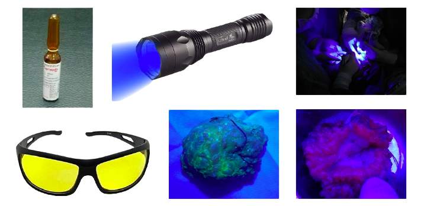

Hi, I am Dr. Chitresh Kumar Sharma (M.B.B.S., M.S., M.Ch., F.MAS., F.A.C.S.) currently working
as Associate Professor Surgical Oncology at AIIMS Bilaspur, Himachal Pradesh. Previously served
at National Cancer Institute, AIIMS, Jhajjar as Assistant Professor.
Pancreas: Insulinoma, Gastrinoma, Glucagonoma, VIPomas and others
Breast: Conservative Breast Surgeries, Oncoplastic procedures, Mastectomies, Sentinel Node biopsy, and TIVAD insertion
Neuroendocrine tumors: Carcinoids, Paragangliomas, and Carotid Body Tumor
Work experience
Associate Professor of Surgical Oncology at AIIMS, Bilaspur (H.P.) from 9th Dec 2020 till now.
Assistant Professor of Surgical Oncology at National Cancer Institute, AIIMS, New Delhi from 8th Feb 2018 to 8th Dec 2020.
Senior Research Associate in Dept. of Surgical Disciplines at All India Institute of Medical Sciences, New Delhi from 29th Feb 2016 to 7th Feb 2018.
Completed MCh Endocrine Surgery in Dept. Of Endocrine and Breast Surgery at Sanjay Gandhi PG Institute of Medical Sciences, Lucknow in June 2015.
Clinical Observership in Head and Neck services at Memorial Sloan Kettering Cancer Center, USA from 3rd to 28th Nov 2014.
Completed Fellowship in Minimal Access Surgery (F.MAS) in Sept 2009 from Laparoscopic Hospital, New Delhi
Completed MS General Surgery in Dept. Of General Surgery at Institute of Medical Sciences, Banaras Hindu University, Varanasi.
Completed “One-year rotatory Internship Training” at Sir Sunderlal Hospital Institute of Medical Sciences, Varanasi, from 1st Jan 2005 to 31st Dec 2005, as per rulings of Medical Council of India in Department of Medicine, Surgery, Obstetrics & Gynecology including Family Welfare Planning, Elective training (Radiology and Skin & VD), Orthopedics, Eye, E.N.T, Psychiatry, Community Medicine and Pediatrics.
Education
M.Ch (Endocrine Surgery) July 2012 to June 2015 Sanjay Gandhi Post Graduate Institute of Medical Sciences, Lucknow
Clinical Observer Nov 2014 Memorial Sloan Kettering Cancer Center, New York, USA
F.MAS (Minimal Access Surgery) Sept 2009 Laparoscopy Hospital, New Delhi (Endorsed by SAGES, USA)
M.S. (Gen Surgery) May 2006 to May 2009 Institute of Medical Sciences, Banaras Hindu University, Varanasi
MBBS July 2000 to Dec 2004 Institute of Medical Sciences, Banaras Hindu University, Varanasi
Lectures
Talk on Mammography in virtual PG Master Class in Surgery held on 6th to 7th Feb 2021 at Department of Surgery, IMS, BHU
Presentation: Education, Training & Research in Developing World: International workshop and symposium on Best practices in Endocrine surgery on 5th Dec 2014
Case discussion with a review of literature: Occult Follicular Thyroid Carcinoma Presenting as Distant Metastases Nine Years prior to Definitive Management, at ATA trainee’s conference during 84th annual meeting of American Thyroid Association, San Diego, USA, 2014.
Poster presentation: Capsular Invasion At More Than Five Places Is A Significant Prognostic Factor Of Follicular Thyroid Carcinoma at 84th annual meeting of American Thyroid Association, San Diego, USA, 2014
Paper presentation: Correlation Of Various Prognostic Factors With Histological Features In Follicular Thyroid Carcinoma at IAES 15th annual meeting (IAESCON-2014) at Poovar, 20014
Demonstration: Safe use of TIVAD at CME on Safe Venous Assess and Chemotherapy in Cancer Patients at Dept of Endocrine and Breast Surgery on 18th 0ct 2014
Case discussion: Metastatic Breast Cancer at Breast course and ABSI workshop-2014 Feb 8th-9th at SGPGIMS, Lucknow.
Endocrine Radiology case discussion in 11th Post Graduate Course in Endocrine Surgery 2013 Nov 7-10th at SGPGIMS, Lucknow.
Role of IOPTH in management of PHPT in 11th Post Graduate Course in Endocrine Surgery 2013 Nov 7-10th at SGPGIMS, Lucknow.
Awards & Fellowships
Finalist in BMJ South Asia Award:2018 "Surgical Innovation category"
1st Prize winner of national-level quiz in endocrine surgery at Indian Association of Endocrine Surgeons 15th annual meeting (IAESCON-2014) at Poovar, 20014.
Dr. Chip Ridgway Travelling fellowship for attending ATA trainee’s conference during 84th annual meeting of American Thyroid Association, San Diego, USA, 2014.
ICMR international travel Grant for attending 84th annual meeting of American Thyroid Association, San Diego, USA, 2014.
Fellowship in Minimal Access Surgery (FMAS) accredited by SAGES, 14th Sept 2009.
Memberships
American Thyroid Association (ATA)
American College of Surgeons (ACS)
World Association of Laparoscopic Surgeons (WALS)
Indian Association of Endocrine Surgeons (IAES)
Association of Surgeons of India (ASI)
Association of Breast Surgeons of India (ABSI)
Indian Society Of Thyroid Surgeons (ISTS)
Indian Medical Association (IMA)
Research work

Fluorescence guided breast conserving surgery
Research Projects
CSIR project:“Fluorescence guided identification of tumor margins during breast conservation surgery”at Department of Surgical Disciplines, AIIMS, New Delhi.
Prospective project:“Quality of life (QoL) in patients with Graves’ disease: Pre and Post therapy”.
Retrospective project:“Long term Outcome of Follicular Thyroid Carcinoma (FTC) in Developing Countries: Correlation with Histological Subtypes and Other Factors”.
Submitted thesis on“Endoscopic versus Microscopic discectomy in lumbar disc prolapse: a prospective study” in July 2008, at Department of General Surgery, Institute of Medical Sciences, Banaras Hindu University, Varanasi.
Publications
Lohani KR, Kumar C, Kataria K, Srivastava A, Ranjan P, Dhar A. Role of tranexamic acid in axillary lymph node dissection in breast cancer patients: Does it help in reducing lymphedema? Breast J. 2021 Mar 11. doi: 10.1111/tbj.14222.
Panda S, Mohamed A, Sikka K, Kanodia A, Sakthivel P, Thakar A, Bhatnagar S, Mohan A, Meena VP, Tiwari P, Sahoo B, Dar L, Vig S, Garg R, Kumar C. Otolaryngologic Manifestation and Long-Term Outcome in Mild COVID-19: Experience from a Tertiary Care Centre in India. Indian J Otolaryngol Head Neck Surg. 2020 Oct 14;73(1):1-6.
Kumar C, Lohani KR, Kataria K, Ranjan P, Dhar A, Srivastava A. Endoscopic thyroidectomy: Which one is the better technique for the beginners? J Minim Access Surg. 2020 Sep 12.
Kumar C, Ranjan P, Kataria K et al. Anurag’s Interfascial Mastectomy: a new Postulate in Breast Cancer Surgery. Indian J Surg (2021).
Simha A, Dhiman A, Kumar C. Regarding: "Recognition of primary hyperparathyroidism: Delayed time course from hypercalcemia to surgery". Surgery. 2020 Nov;168(5):976.
Prakash S, Damle NA, Kandasamy D, Gupta Y, Kumar C, Agarwal S, Yadav R, Boro H, Alam S, Yadav D. Parathyromatosis in a patient with parathyroid carcinoma and hypercalcemic crisis: Findings on MIBI scan and 4D CT Thyroid Research and Practice. 2020 17(2):89-93
Agarwal S, Kakkar A, Damle NA, Kumar C, Sarangi J, Subudhi K, Jain D, Sharma MC. SMARCB1 (INI1)-deficient thyroid carcinoma: A novel entity expanding the spectrum of tumors with INI1 loss. Pathol Res Pract. 2020 Apr;216(4):152830.
Mishra A, Ray MD, Bhoriwal S, Sharma J, Kumar C, Dhall K, Gowda MS, Kumar A. Management options for gynecological cancers in low-to middle-income countries amidst COVID-19 pandemic. Journal of Cancer Research and Practice. 2020 Jul;7(3):121.
Ray D, Ranjan A, Dubey H, De A, Kumar C. Ovarian Metastasis as Initial Presentation of Primary Thyroid Carcinoma: A Case Report and Review of Literature. Journal of case Reports. 2020;10(3):192-196.
Tanwar P, Kumar R, Kumar C, Hussain S. Impact of family medicine practice in combating Violence against Doctors. J Family Med Prim Care. 2019 Aug 28;8(8):2748-2749.
Kumar C, Jha CK, Bichoo RA, Yadav SK. Wide angled 'V' is the perfect disposition of a TIVAD catheter when right internal jugular vein is cannulated to gain central access. Gastroenterol Rep (Oxf). 2019 Jul 15;7(5):374-375.
Passah A, Damle NA, Arora S, Kumar R, Kumar C, Ramteke P, Bal C, Tripathi M. Follicular variant of papillary carcinoma thyroid occurring in struma ovarii. Thyroid Res Pract. 2019; 16(1):48-50
Prabhu M, Kumari G, Damle NA, Arora G, Kumar P, Kumar R, Tripathi M, Bal C, Khadgawat R, Kumar C, Agarwal S. Assessment of the role of early dynamic PET/CT with 18F-fluorocholine in detection of parathyroid lesions in patients with primary hyperparathyroidism. Nucl Med Commun. 2018 Dec;39(12):1190-1196.
Singh K, Khattar M, Kumar C. Disagreement: Should the duration of primary hyperparathyroidism impact guidelines for evaluation and treatment? Surgery. 2019 Nov;166(5):949-950.
Khadka S, Singh K, Kumar C. Comments on: Cost-effectiveness of immediate biopsy versus surveillance of intermediate-suspicion thyroid nodules. Surgery. 2019 Feb;165(2):486-496.
Saha S, Kumar A, Kumar C, Kataria K. Paraneoplastic cerebellar degeneration as a manifestation of metastatic recurrent carcinoma breast: rare scenario. BMJ Case Rep. 2018 Aug 27;2018:bcr2017222575.
Chopra P, Kumar C. Letter to editor: Thyroid lobectomy is not sufficient for T2 papillary thyroid cancers. Surgery. 2019 Feb;165(2):486-496.
Kumar C, Mishra A, Kumari N, Krishnani N, Chand G, Agarwal G, Agarwal A,Mishra SK. Importance of Number of Foci of Capsular Invasion in Follicular Thyroid Carcinoma. Indian J Surg Oncol. 2018 Mar;9(1):6-10.
Saha S, Kumar C, Srivastava A. Commentary on: Post-thyroidectomy hypocalcemia is related to parathyroid dysfunction even in patients with normal parathyroid hormone concentrations early after surgery. Surgery. 2016 Dec;160(6):1709-1710.
Kumar C, Voppuru SR, Jamaluddin MA. Comments on: Cosyntropin stimulation testing on postoperative day 1 allows for selective glucocorticoid replacement therapy after adrenalectomy for hypercortisolism: Results of a novel, multidisciplinary institutional protocol. Surgery. 2016 Jul;160(1):248-249.
Mishra A, Kumar C, Chand G, Agarwal G, Agarwal A, Verma AK, Mishra SK. Long-Term Outcome of Follicular Thyroid Carcinoma in Patients Undergoing Surgical Intervention for Skeletal Metastases. World J Surg. 2016 Mar;40(3):562-569
Kumar C, Saha S, Gour K. Comments on: Risk factors for central lymph node metastasis in papillary thyroid carcinoma: A National Cancer Data Base (NCDB) study. Surgery. 2016 May;159(5):1483-1484.
Rajan S, Kumar C. Letter to the Editor regarding association of vascular invasion with mortality in follicular thyroid carcinoma. Head Neck. 2016;38(1):158
Kumar C, Jha CK. Comment on: Is central lymph node dissection necessary for parathyroid carcinoma? Surgery. 2015;158(6):1745
Kumar C, Mishra A. Prospective Randomized Controlled Trial on the Use of Flexible Reinforced Laryngeal Mask Airway (LMA) during Total Thyroidectomy: Effects on Postoperative Laryngopharyngeal Symptoms: Reply. World J Surg. 2015;39(3):810
Meena RN, Kumar C, Khanna R, Sharma V. Endoscopic versus Microdiscectomny In Lumber Disc Prolapsed: A Prospective Study. IJDS 2010;2(3):116-124.
Agarwal D, Lahiri T K, Prasad S, Kumar C. Giant Cystic Teratoma of the Mediastinum: The Ind. Pract.2008;61(1):41-44
Gallery
Holi celebration inside the SGPGIMS, Lucknow campus
With Prof Martin Waltz, Dr Ritesh, Dr Om Prakash, Dr Chandan @ IAESCON 2014
Presenting a poster @ American Thyroid Association Annual Conference 2014
International faculties @ Pre-conference AsAESCON 2018, Robotic Thyroidectomy workshop, AIIMS New Delhi
With my teachers & seniors @ IAESCON 2018
Foundation stone of AIIMS Bilaspur laid by our PM Modi Ji
Convocation day with batchmates
Prof SK Mishra & Entire AsAES 2018 team, New Delhi
Prof Anurag and AIIMS team with international fellows @ SGPGI Breast course 2016
With Prof Anurag, Dr Chandan, Dr Ramya, Dr Kaustubha, Dr Kavindra @ IAESCON 2017
With my teachers & seniors @ IAESCON 2019
Inaugural ceremony with our co-faculties and President AIIMS Bilaspur